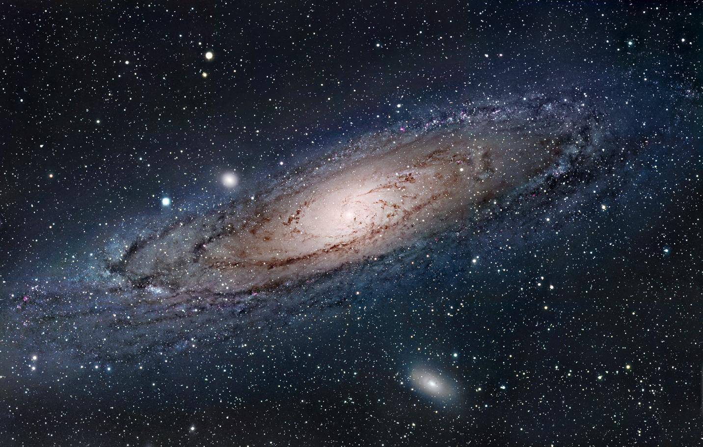
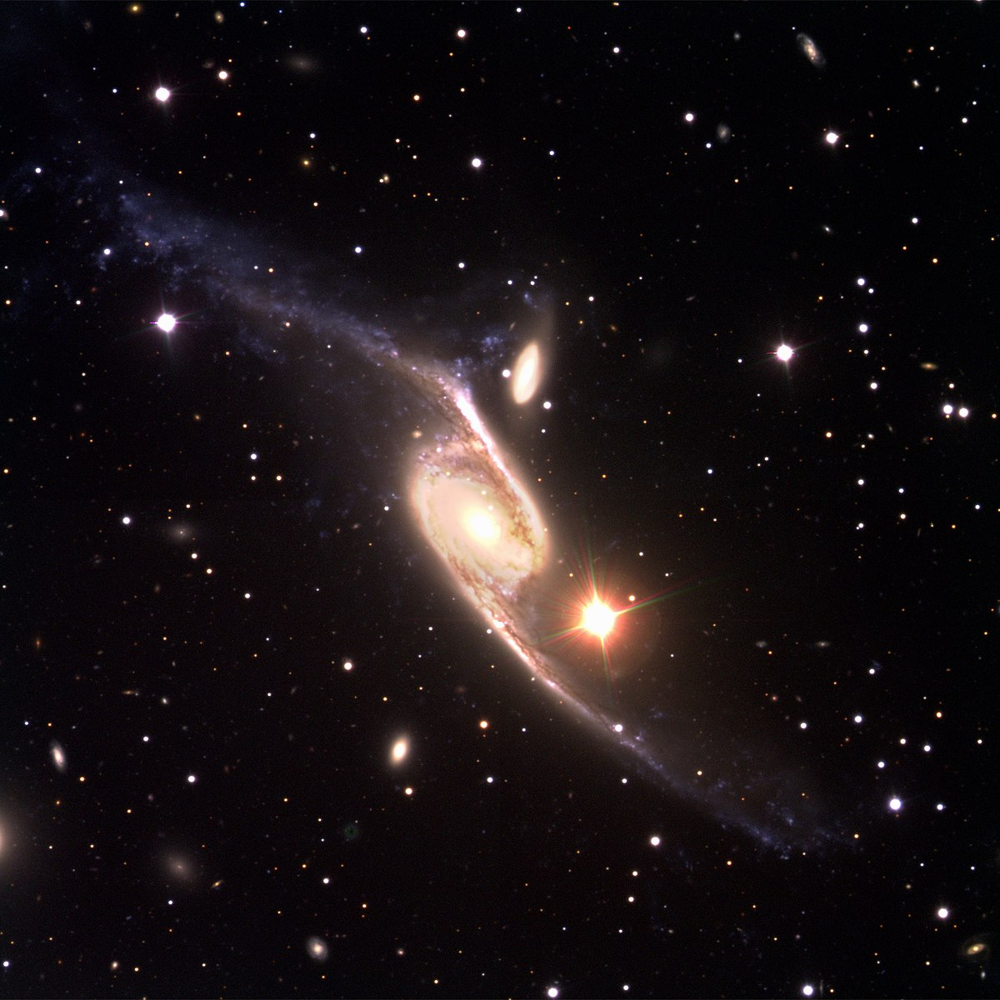

ANDROMEDA GALAXY
The Andromeda Galaxy (IPA: /ænˈdrɒmɪdə/), also known as Messier 31, M31, or NGC 224 and originally the Andromeda Nebula, is a barred spiral galaxy with the diameter of about 46.56 kiloparsecs (152,000 light-years) approximately 2.5 million light-years (765 kiloparsecs) from Earth and the nearest large galaxy to the Milky Way. The galaxy's name stems from the area of Earth's sky in which it appears, the constellation of Andromeda, which itself is named after the princess who was the wife of Perseus in Greek mythology.

MILKY WAY
The Milky Way[b] is the galaxy that includes our Solar System, with the name describing the galaxy's appearance from Earth: a hazy band of light seen in the night sky formed from stars that cannot be individually distinguished by the naked eye. The term Milky Way is a translation of the Latin via lactea, from the Greek γαλακτικός κύκλος (galaktikos kýklos), meaning "milky circle". From Earth, the Milky Way appears as a band because its disk-shaped structure is viewed from within. Galileo Galilei first resolved the band of light into individual stars with his telescope in 1610. Until the early 1920s, most astronomers thought that the Milky Way contained all the stars in the Universe. Following the 1920 Great Debate between the astronomers Harlow Shapley and Heber Curtis,observations by Edwin Hubble showed that the Milky Way is just one of many galaxies.
MESSIER 81
Messier 81 (also known as NGC 3031 or Bode's Galaxy) is a grand design spiral galaxy about 12 million light-years away in the constellation Ursa Major. It has a D25 isophotal diameter of 29.44 kiloparsecs (96,000 light-years).Because of its relative proximity to the Milky Way galaxy, large size, and active galactic nucleus (which harbors a 70 million M☉ supermassive black hole), Messier 81 has been studied extensively by professional astronomers. The galaxy's large size and relatively high brightness also makes it a popular target for amateur astronomers.In late February 2022, astronomers reported that M81 may be the source of FRB 20200120E, a repeating fast radio burst.

NGC 6872 e IC 4970
NGC 6872 e IC 4970 são duas galáxias interagindo, a aproximadamente 212 milhões de anos-luz, na direção da constelação de Pavo. Em 29 de março de 1999, o ESO observou estas duas galáxias. O belo visual da espetacular galáxia espiral barrada NGC 6872 se parace com um "símbolo integral". Ela é do tipo SBb e está acompanhada por um pequena galáxia, em interação, IC 4970 do tipo E7-S0.
